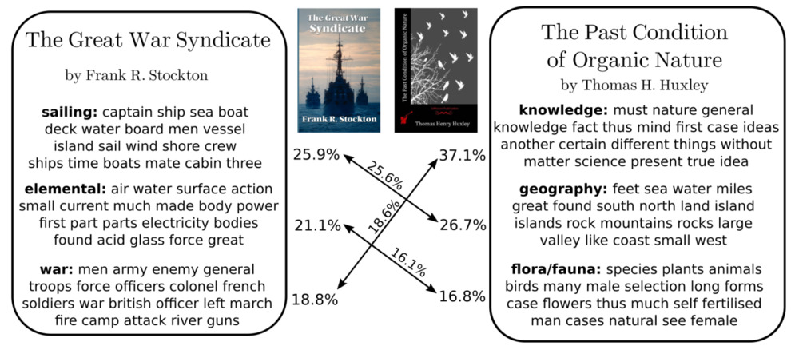

Two weeks ago, I did a presentation for my colleagues of the paper from Yurochkin et al. (2019), from NeurIPS 2019. It contains an interesting approach to document classification leading to strong performance, and, most importantly, excellent interpretability.
This paper seems interesting to me because of it uses two methods with strong theoretical guarantees: optimal transport and topic modelling. Optimal transport looks very promising to me in NLP, and has seen a lot of interest in recent years due to advances in approximation algorithms, such as entropy regularisation. It is also quite refreshing to see approaches using solid results in optimisation, compared to purely experimental deep learning methods.
The problem of the paper is to measure similarity (i.e. a distance) between pairs of documents, by incorporating semantic similarities (and not only syntactic artefacts), without encountering scalability issues.
They propose a “meta-distance” between documents, called the hierarchical optimal topic transport (HOTT), providing a scalable metric incorporating topic information between documents. As such, they try to combine two different levels of analysis:
The essential backbone of the method is the Wasserstein distance, derived from optimal transport theory. Optimal transport is a fascinating and deep subject, so I won’t enter into the details here. For an introduction to the theory and its applications, check out the excellent book from Peyré and Cuturi (2019), (available on ArXiv as well). There are also very nice posts (in French) by Gabriel Peyré on the CNRS maths blog. Many more resources (including slides for presentations) are available at https://optimaltransport.github.io. For a more complete theoretical treatment of the subject, check out Santambrogio (2015), or, if you’re feeling particularly adventurous, Villani (2009).
For this paper, only a superficial understanding of how the Wasserstein distance works is necessary. Optimal transport is an optimisation technique to lift a distance between points in a given metric space, to a distance between probability distributions over this metric space. The historical example is to move piles of dirt around: you know the distance between any two points, and you have piles of dirt lying around Optimal transport originated with Monge, and then Kantorovich, both of whom had very clear military applications in mind (either in Revolutionary France, or during WWII). A lot of historical examples move cannon balls, or other military equipment, along a front line.
. Now, if you want to move these piles to another configuration (fewer piles, say, or a different repartition of dirt a few metres away), you need to find the most efficient way to move them. The total cost you obtain will define a distance between the two configurations of dirt, and is usually called the earth mover’s distance, which is just an instance of the general Wasserstein metric.
More formally, we start with two sets of points \(x = (x_1, x_2, \ldots, x_n)\), and \(y = (y_1, y_2, \ldots, y_n)\), along with probability distributions \(p \in \Delta^n\), \(q \in \Delta^m\) over \(x\) and \(y\) (\(\Delta^n\) is the probability simplex of dimension \(n\), i.e. the set of vectors of size \(n\) summing to 1). We can then define the Wasserstein distance as \[ W_1(p, q) = \min_{P \in \mathbb{R}_+^{n\times m}} \sum_{i,j} C_{i,j} P_{i,j} \] \[ \text{\small subject to } \sum_j P_{i,j} = p_i \text{ \small and } \sum_i P_{i,j} = q_j, \] where \(C_{i,j} = d(x_i, x_j)\) are the costs computed from the original distance between points, and \(P_{i,j}\) represent the amount we are moving from pile \(i\) to pile \(j\).
Now, how can this be applied to a natural language setting? Once we have word embeddings, we can consider that the vocabulary forms a metric space (we can compute a distance, for instance the euclidean or the cosine distance, between two word embeddings). The key is to define documents as distributions over words.
Given a vocabulary \(V \subset \mathbb{R}^n\) and a corpus \(D = (d^1, d^2, \ldots, d^{\lvert D \rvert})\), we represent a document as \(d^i \in \Delta^{l_i}\) where \(l_i\) is the number of unique words in \(d^i\), and \(d^i_j\) is the proportion of word \(v_j\) in the document \(d^i\). The word mover’s distance (WMD) is then defined simply as \[ \operatorname{WMD}(d^1, d^2) = W_1(d^1, d^2). \]
If you didn’t follow all of this, don’t worry! The gist is: if you have a distance between points, you can solve an optimisation problem to obtain a distance between distributions over these points! This is especially useful when you consider that each word embedding is a point, and a document is just a set of words, along with the number of times they appear.
Using optimal transport, we can use the word mover’s distance to define a metric between documents. However, this suffers from two drawbacks:
To escape these issues, we will add an intermediary step using topic modelling. Once we have topics \(T = (t_1, t_2, \ldots, t_{\lvert T \rvert}) \subset \Delta^{\lvert V \rvert}\), we get two kinds of representations:
Since they are distributions over words, the word mover’s distance defines a metric over topics. As such, the topics with the WMD become a metric space.
We can now define the hierarchical optimal topic transport (HOTT), as the optimal transport distance between documents, represented as distributions over topics. For two documents \(d^1\), \(d^2\), \[ \operatorname{HOTT}(d^1, d^2) = W_1\left( \sum_{k=1}^{\lvert T \rvert} \bar{d^1_k} \delta_{t_k}, \sum_{k=1}^{\lvert T \rvert} \bar{d^2_k} \delta_{t_k} \right). \] where \(\delta_{t_k}\) is a distribution supported on topic \(t_k\).
Note that in this case, we used optimal transport twice:
The first one can be precomputed once for all subsequent distances, so it is invariable in the number of documents we have to process. The second one only operates on \(\lvert T \rvert\) topics instead of the full vocabulary: the resulting optimisation problem is much smaller! This is great for performance, as it should be easy now to compute all pairwise distances in a large set of documents.
Another interesting insight is that topics are represented as collections of words (we can keep the top 20 as a visual representations), and documents as collections of topics with weights. Both of these representations are highly interpretable for a human being who wants to understand what’s going on. I think this is one of the strongest aspects of these approaches: both the various representations and the algorithms are fully interpretable. Compared to a deep learning approach, we can make sense of every intermediate step, from the representations of topics to the weights in the optimisation algorithm to compute higher-level distances.
 Representation of two documents in topic space, along with how the distance was computed between them. Everything is interpretable: from the documents as collections of topics, to the matchings between topics determining the overall distance between the books (Yurochkin et al. 2019).
The paper is very complete regarding experiments, providing a full evaluation of the method on one particular application: document clustering. They use Latent Dirichlet Allocation to compute topics and GloVe for pretrained word embeddings (Pennington, Socher, and Manning 2014), and Gurobi to solve the optimisation problems. Their code is available on GitHub.
If you want the details, I encourage you to read the full paper, they tested the methods on a wide variety of datasets, with datasets containing very short documents (like Twitter), and long documents with a large vocabulary (books). With a simple \(k\)-NN classification, they establish that HOTT performs best on average, especially on large vocabularies (books, the “gutenberg” dataset). It also has a much better computational performance than alternative methods based on regularisation of the optimal transport problem directly on words. So the hierarchical nature of the approach allows to gain considerably in performance, along with improvements in interpretability.
What’s really interesting in the paper is the sensitivity analysis: they ran experiments with different word embeddings methods (word2vec, (Mikolov et al. 2013)), and with different parameters for the topic modelling (topic truncation, number of topics, etc). All of these reveal that changes in hyperparameters do not impact the performance of HOTT significantly. This is extremely important in a field like NLP where most of the times small variations in approach lead to drastically different results.
All in all, this paper present a very interesting approach to compute distance between natural-language documents. It is no secret that I like methods with strong theoretical background (in this case optimisation and optimal transport), guaranteeing a stability and benefiting from decades of research in a well-established domain.
Most importantly, this paper allows for future exploration in document representation with interpretability in mind. This is often added as an afterthought in academic research but is one of the most important topics for the industry, as a system must be understood by end users, often not trained in ML, before being deployed. The notion of topic, and distances as weights, can be understood easily by anyone without significant background in ML or in maths.
Finally, I feel like they did not stop at a simple theoretical argument, but carefully checked on real-world datasets, measuring sensitivity to all the arbitrary choices they had to take. Again, from an industry perspective, this allows to implement the new approach quickly and easily, being confident that it won’t break unexpectedly without extensive testing.
Mikolov, Tomas, Ilya Sutskever, Kai Chen, Greg S Corrado, and Jeff Dean. 2013. “Distributed Representations of Words and Phrases and Their Compositionality.” In Advances in Neural Information Processing Systems 26, 3111–9. http://papers.nips.cc/paper/5021-distributed-representations-of-words-and-phrases-and-their-compositionality.pdf.
Pennington, Jeffrey, Richard Socher, and Christopher Manning. 2014. “Glove: Global Vectors for Word Representation.” In Proceedings of the 2014 Conference on Empirical Methods in Natural Language Processing (EMNLP), 1532–43. Doha, Qatar: Association for Computational Linguistics. https://doi.org/10.3115/v1/D14-1162.
Peyré, Gabriel, and Marco Cuturi. 2019. “Computational Optimal Transport.” Foundations and Trends in Machine Learning 11 (5-6): 355–206. https://doi.org/10.1561/2200000073.
Santambrogio, Filippo. 2015. Optimal Transport for Applied Mathematicians. Vol. 87. Progress in Nonlinear Differential Equations and Their Applications. Cham: Springer International Publishing. https://doi.org/10.1007/978-3-319-20828-2.
Villani, Cédric. 2009. Optimal Transport: Old and New. Grundlehren Der Mathematischen Wissenschaften 338. Berlin: Springer.
Yurochkin, Mikhail, Sebastian Claici, Edward Chien, Farzaneh Mirzazadeh, and Justin M Solomon. 2019. “Hierarchical Optimal Transport for Document Representation.” In Advances in Neural Information Processing Systems 32, 1599–1609. http://papers.nips.cc/paper/8438-hierarchical-optimal-transport-for-document-representation.pdf.